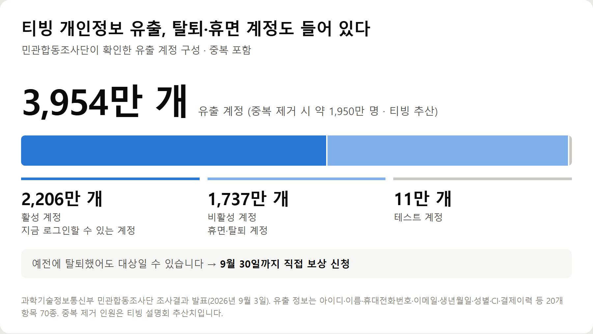
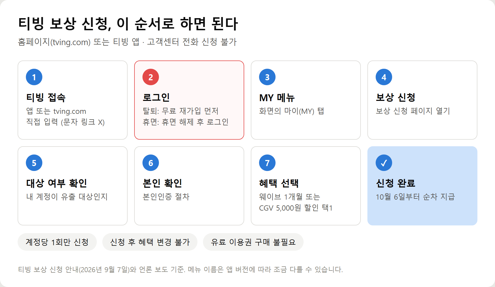
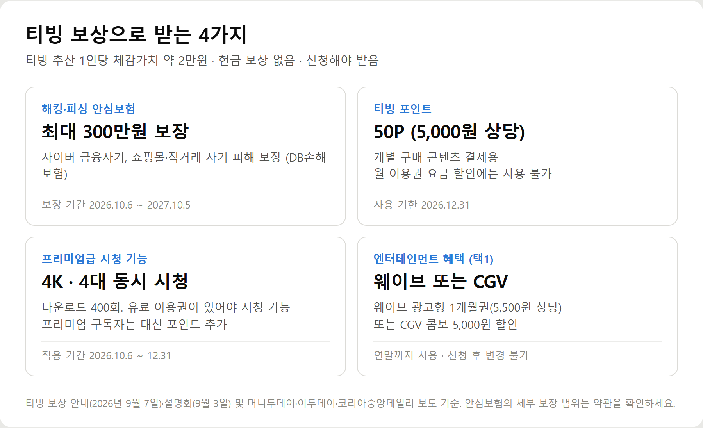
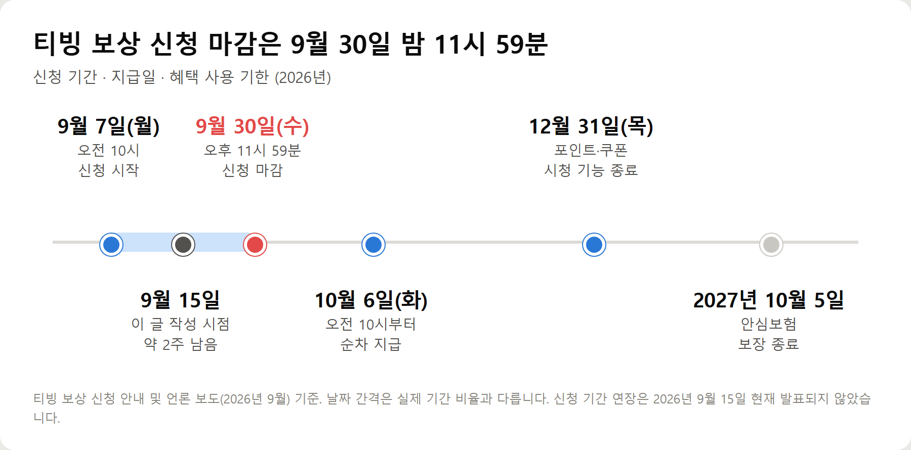

<meta charset="utf-8">
<title>티빙 개인정보 유출 보상 신청 가이드 — 나의 투자 그리고 행복한 여행</title>
<meta name="description" content="티빙 개인정보 유출 보상 신청 방법 총정리. 3,954만 계정 유출 대상 확인법, 탈퇴·휴면회원 재가입 절차, 안심보험·포인트 5000원 등 받는 혜택, 9월 30일 마감일과 지금 해야 할 보안 조치까지 정리했습니다.">
<meta name="viewport" content="width=device-width, initial-scale=1">
<link rel="canonical" href="https://danielmoon82.github.io/moon/posts/tving-breach-compensation-2026-09-15.html">
<link rel="preconnect" href="https://fonts.googleapis.com">
<link rel="preconnect" href="https://fonts.gstatic.com" crossorigin>
<link rel="stylesheet" href="https://fonts.googleapis.com/css2?family=Hahmlet:wght@400;600;800&family=IBM+Plex+Mono:wght@400;500&family=IBM+Plex+Sans+KR:wght@300;400;500;600&display=swap">

<style>
  :root{
    --paper:#F2EEE6;--surface:#FAF8F3;--surface-2:#E7E1D5;
    --ink:#191510;--ink-2:#4A4235;--ink-3:#7D7364;
    --line:#D6CEBF;--line-soft:#E4DDD0;--accent:#B06A15;--accent-bright:#C2761A;
    --up:#E5484D;--down:#3B82F6;
    --f-display:"Hahmlet",'Nanum Myeongjo',"Apple SD Gothic Neo",serif;
    --f-body:"IBM Plex Sans KR","Apple SD Gothic Neo","Malgun Gothic",sans-serif;
    --f-mono:"IBM Plex Mono","SFMono-Regular",Consolas,monospace;
    --pad:clamp(20px,5vw,64px);
  }
  @media (prefers-color-scheme:dark){
    :root:not([data-theme="light"]){
      --paper:#0B1120;--surface:#121A2C;--surface-2:#1A2439;
      --ink:#E9EEF7;--ink-2:#A9B5C9;--ink-3:#72809A;
      --line:#26314A;--line-soft:#1D2739;--accent:#E8A33D;--accent-bright:#F0B45C;
    }
  }
  *{box-sizing:border-box;}
  body{margin:0;background:var(--paper);color:var(--ink);font-family:var(--f-body);
    font-weight:300;font-size:1rem;line-height:1.75;-webkit-font-smoothing:antialiased;}
  a{color:inherit;}
  img{max-width:100%;height:auto;}
  .wrap{max-width:760px;margin:0 auto;padding-inline:var(--pad);}
  .nav{position:sticky;top:0;z-index:20;background:color-mix(in srgb,var(--paper) 88%,transparent);
    backdrop-filter:saturate(180%) blur(12px);border-bottom:1px solid var(--line);}
  .nav-in{display:flex;align-items:center;justify-content:space-between;height:58px;}
  .brand{font-family:var(--f-display);font-weight:600;font-size:1rem;letter-spacing:-.02em;text-decoration:none;}
  .back{font-family:var(--f-mono);font-size:.72rem;color:var(--ink-3);text-decoration:none;}
  .article{padding-block:clamp(40px,7vw,72px) clamp(56px,9vw,96px);}
  .eyebrow{font-family:var(--f-mono);font-size:.68rem;letter-spacing:.16em;text-transform:uppercase;
    color:var(--accent);margin:0 0 14px;}
  h1{font-family:var(--f-display);font-weight:800;font-size:clamp(1.6rem,4.4vw,2.3rem);
    line-height:1.3;letter-spacing:-.03em;margin:0 0 16px;}
  .byline{font-family:var(--f-mono);font-size:.72rem;color:var(--ink-3);
    padding-bottom:24px;border-bottom:1px solid var(--line);margin-bottom:32px;}
  h2{font-family:var(--f-display);font-weight:600;font-size:1.25rem;letter-spacing:-.02em;margin:42px 0 14px;}
  h3{font-family:var(--f-display);font-weight:600;font-size:1.05rem;letter-spacing:-.02em;
    margin:30px 0 10px;padding-top:14px;border-top:1px solid var(--line-soft);}
  h3 .code{font-family:var(--f-mono);font-size:.7rem;font-weight:400;color:var(--ink-3);margin-left:6px;}
  p{margin:0 0 18px;color:var(--ink-2);}
  ul.checks{margin:0 0 18px;padding-left:20px;color:var(--ink-2);}
  ul.checks li{margin-bottom:8px;font-size:.94rem;}
  table{width:100%;border-collapse:collapse;font-size:.88rem;margin-bottom:8px;}
  th{font-family:var(--f-mono);font-size:.66rem;letter-spacing:.06em;text-transform:uppercase;
    color:var(--ink-3);text-align:right;padding:8px 6px;border-bottom:1px solid var(--line);}
  th:first-child{text-align:left;}
  td{padding:10px 6px;border-bottom:1px solid var(--line-soft);color:var(--ink-2);}
  td.num{font-family:var(--f-mono);text-align:right;font-variant-numeric:tabular-nums;}
  td.up{color:var(--up);} td.down{color:var(--down);}
  .scroll{overflow-x:auto;}
  figure{margin:22px 0;}
  figure img{display:block;border-radius:3px;background:var(--surface-2);}
  figcaption{margin-top:8px;font-family:var(--f-mono);font-size:.68rem;color:var(--ink-3);text-align:center;}
  .note{margin-top:34px;padding:16px 18px;border-left:3px solid var(--accent);
    background:var(--surface);border-radius:0 3px 3px 0;}
  .note p{margin:0;font-size:.85rem;color:var(--ink-3);}
  .foot{border-top:1px solid var(--line);background:var(--surface);padding-block:30px 38px;}
  .foot p{margin:0;font-size:.8rem;color:var(--ink-3);}
</style>

<nav class="nav">
  <div class="wrap nav-in">
    <a class="brand" href="../index.html">나의 투자 그리고 행복한 여행</a>
    <a class="back" href="../index.html#stocks">← 시황으로</a>
  </div>
</nav>

<main class="wrap article">
  <p class="eyebrow">Market</p>
  <h1>티빙 개인정보 유출 보상 신청 가이드 (2026년 9월 기준) — 대상 확인·절차·혜택·마감일</h1>
  <p class="byline">생활정보 · 2026-09-15 기준</p>

  <p>한 줄 요약: 티빙 유출 대상이면 9월 30일 23시 59분까지 홈페이지·앱 MY 메뉴에서 직접 보상을 신청해야 하고, 탈퇴회원은 무료 재가입 후 신청하며, 보상은 10월 6일부터 순차 지급됩니다.</p>
  <p>과학기술정보통신부 민관합동조사단 발표(2026년 9월 3일)와 티빙 보상 안내, 주요 언론 보도를 교차 확인해 정리한 기록입니다.</p>
  <div class="note"><p>※ 이 글은 2026년 9월 15일 기준 최신 자료를 바탕으로 작성했으며, 티빙 공식 공지 및 정부 조사 결과에 따라 내용이 변경될 수 있습니다.</p></div>
  <h2>티빙 개인정보 유출, 핵심만 먼저</h2>
  <figure><figcaption>티빙 개인정보 유출 계정 구성 — 총 3,954만 개(중복 포함), 과학기술정보통신부 민관합동조사단 2026년 9월 3일 발표</figcaption></figure>
  <div style="overflow-x:auto;margin:14px 0;"><table style="border-collapse:collapse;width:100%;font-size:15px;line-height:1.55;"><thead><tr><th style="border:1px solid #d9d9d6;padding:9px 11px;vertical-align:top;text-align:left;background:#f3f3f1;font-weight:700;">항목</th><th style="border:1px solid #d9d9d6;padding:9px 11px;vertical-align:top;text-align:left;background:#f3f3f1;font-weight:700;">내용</th></tr></thead><tbody><tr><td style="border:1px solid #d9d9d6;padding:9px 11px;vertical-align:top;text-align:left;font-weight:700;white-space:nowrap;">유출 계정 수</td><td style="border:1px solid #d9d9d6;padding:9px 11px;vertical-align:top;text-align:left;">3,954만 개 (중복 포함, 중복 제거 시 약 1,950만 명 — 티빙 추산)</td></tr><tr><td style="border:1px solid #d9d9d6;padding:9px 11px;vertical-align:top;text-align:left;font-weight:700;white-space:nowrap;">포함된 계정</td><td style="border:1px solid #d9d9d6;padding:9px 11px;vertical-align:top;text-align:left;">활성 2,206만 개 · 휴면·탈퇴 1,737만 개 · 테스트 11만 개</td></tr><tr><td style="border:1px solid #d9d9d6;padding:9px 11px;vertical-align:top;text-align:left;font-weight:700;white-space:nowrap;">유출된 정보</td><td style="border:1px solid #d9d9d6;padding:9px 11px;vertical-align:top;text-align:left;">20개 항목 70종 — 아이디, 이름, 휴대전화번호, 이메일, 생년월일, 성별, CI, 중복가입확인정보, 결제이력 등</td></tr><tr><td style="border:1px solid #d9d9d6;padding:9px 11px;vertical-align:top;text-align:left;font-weight:700;white-space:nowrap;">개발 프로젝트 유출</td><td style="border:1px solid #d9d9d6;padding:9px 11px;vertical-align:top;text-align:left;">소스코드가 담긴 개발 프로젝트 361건(약 30GB)</td></tr><tr><td style="border:1px solid #d9d9d6;padding:9px 11px;vertical-align:top;text-align:left;font-weight:700;white-space:nowrap;">정부 조사 결과</td><td style="border:1px solid #d9d9d6;padding:9px 11px;vertical-align:top;text-align:left;">접속키 관리 부실, 접근권한 통제 미흡, 2024년 모의해킹 지적 사항 미개선, 신고 지연</td></tr><tr><td style="border:1px solid #d9d9d6;padding:9px 11px;vertical-align:top;text-align:left;font-weight:700;white-space:nowrap;">보상 진행 상황</td><td style="border:1px solid #d9d9d6;padding:9px 11px;vertical-align:top;text-align:left;">9월 7일 오전 10시 ~ 9월 30일 오후 11시 59분 신청 접수, 10월 6일부터 순차 지급</td></tr></tbody></table></div>
  <p>동일인이 여러 계정을 가진 경우가 많아 계정 수와 사람 수는 다릅니다. 한 사람이 최대 13개 계정을 가진 사례도 확인됐습니다.</p>
  <p>비밀번호는 되돌릴 수 없는 방식(일방향 암호화)으로 저장돼 있었다고 조사 결과에 나옵니다. 반면 휴대전화번호와 이메일은 암호를 푸는 열쇠가 함께 보관돼 있어 풀릴 수 있는 상태였습니다. 문자·메일을 이용한 사칭을 조심해야 하는 이유입니다.</p>
  <h2>티빙 유출 대상 확인 방법 — 보상 신청 단계별 정리</h2>
  <p>가장 중요한 것은 여기입니다. 티빙 개인정보 유출 대상자 확인은 별도 조회 사이트가 아니라 <b>티빙 홈페이지나 앱의 보상 신청 페이지 안에서</b> 합니다.</p>
  <figure><figcaption>티빙 보상 신청 절차 7단계 — 로그인부터 신청 완료까지 (2026년 9월 티빙 안내 기준)</figcaption></figure>
  <ul class="checks">
    <li>① 티빙 홈페이지(tving.com) 또는 티빙 앱에 접속합니다</li>
    <li>② 로그인합니다 — 탈퇴했다면 먼저 무료 회원으로 다시 가입합니다</li>
    <li>③ 화면의 MY(마이) 메뉴로 들어갑니다</li>
    <li>④ 보상 신청 페이지를 엽니다</li>
    <li>⑤ 내 계정이 개인정보 유출 대상인지 확인합니다</li>
    <li>⑥ 본인 확인(본인인증)을 거칩니다</li>
    <li>⑦ 받을 혜택을 고르고 신청을 완료합니다</li>
  </ul>
  <p>메뉴 이름은 앱 버전에 따라 조금 다르게 보일 수 있습니다. MY 메뉴에 보상 신청 항목이 안 보이면 앱을 최신 버전으로 업데이트한 뒤 다시 들어가 보세요.</p>
  <p>주의할 점이 두 가지 있습니다.</p>
  <ul class="checks">
    <li>신청은 계정당 처음 한 번만 됩니다</li>
    <li>신청한 뒤에는 고른 혜택을 바꿀 수 없습니다 — 웨이브와 CGV 중 무엇을 고를지 미리 정해 두세요</li>
  </ul>
  <p>고객센터로 전화해 대신 신청하는 방법은 없습니다. 부모님이 티빙을 쓰셨다면 휴대폰으로 함께 신청해 드리는 것이 가장 확실합니다.</p>
  <h2>티빙 보상 내용 총정리 — 안심보험·포인트 5000원·시청 기능</h2>
  <figure><figcaption>티빙 개인정보 유출 보상 4가지 구성과 사용 기한 (2026년 9월 티빙 안내 기준)</figcaption></figure>
  <div style="overflow-x:auto;margin:14px 0;"><table style="border-collapse:collapse;width:100%;font-size:15px;line-height:1.55;"><thead><tr><th style="border:1px solid #d9d9d6;padding:9px 11px;vertical-align:top;text-align:left;background:#f3f3f1;font-weight:700;">보상</th><th style="border:1px solid #d9d9d6;padding:9px 11px;vertical-align:top;text-align:left;background:#f3f3f1;font-weight:700;">내용</th><th style="border:1px solid #d9d9d6;padding:9px 11px;vertical-align:top;text-align:left;background:#f3f3f1;font-weight:700;">신청 필요 여부</th><th style="border:1px solid #d9d9d6;padding:9px 11px;vertical-align:top;text-align:left;background:#f3f3f1;font-weight:700;">대상·조건</th></tr></thead><tbody><tr><td style="border:1px solid #d9d9d6;padding:9px 11px;vertical-align:top;text-align:left;font-weight:700;white-space:nowrap;">해킹·피싱 안심보험</td><td style="border:1px solid #d9d9d6;padding:9px 11px;vertical-align:top;text-align:left;">1년간(2026.10.6~2027.10.5) 최대 300만원 보장, DB손해보험</td><td style="border:1px solid #d9d9d6;padding:9px 11px;vertical-align:top;text-align:left;">신청 필요</td><td style="border:1px solid #d9d9d6;padding:9px 11px;vertical-align:top;text-align:left;">신청한 유출 대상자</td></tr><tr><td style="border:1px solid #d9d9d6;padding:9px 11px;vertical-align:top;text-align:left;font-weight:700;white-space:nowrap;">프리미엄급 시청 기능</td><td style="border:1px solid #d9d9d6;padding:9px 11px;vertical-align:top;text-align:left;">10월 6일~12월 31일, 4K 화질·다운로드 400회·4대 동시 시청</td><td style="border:1px solid #d9d9d6;padding:9px 11px;vertical-align:top;text-align:left;">신청 필요 (일부 보도는 자동 적용으로 전함)</td><td style="border:1px solid #d9d9d6;padding:9px 11px;vertical-align:top;text-align:left;">유료 이용권이 있어야 시청 가능. 프리미엄 구독자는 대신 포인트 추가</td></tr><tr><td style="border:1px solid #d9d9d6;padding:9px 11px;vertical-align:top;text-align:left;font-weight:700;white-space:nowrap;">티빙 포인트 50P</td><td style="border:1px solid #d9d9d6;padding:9px 11px;vertical-align:top;text-align:left;">5,000원 상당, 12월 31일까지 사용</td><td style="border:1px solid #d9d9d6;padding:9px 11px;vertical-align:top;text-align:left;">신청 필요</td><td style="border:1px solid #d9d9d6;padding:9px 11px;vertical-align:top;text-align:left;">신청한 유출 대상자. 개별 구매 콘텐츠에만 사용</td></tr><tr><td style="border:1px solid #d9d9d6;padding:9px 11px;vertical-align:top;text-align:left;font-weight:700;white-space:nowrap;">엔터테인먼트 혜택</td><td style="border:1px solid #d9d9d6;padding:9px 11px;vertical-align:top;text-align:left;">웨이브 광고형 1개월권 또는 CGV 콤보 5,000원 할인 중 1개</td><td style="border:1px solid #d9d9d6;padding:9px 11px;vertical-align:top;text-align:left;">신청 시 선택</td><td style="border:1px solid #d9d9d6;padding:9px 11px;vertical-align:top;text-align:left;">신청한 유출 대상자, 연말까지 사용</td></tr></tbody></table></div>
  <h2>해킹·피싱 안심보험은 무엇을 보장하나</h2>
  <p>사이버 금융사기, 인터넷 쇼핑몰 사기, 개인 간 직거래 사기로 돈을 잃었을 때 1인당 최대 300만원까지 보장하는 보험입니다. 보장 기간은 2026년 10월 6일부터 2027년 10월 5일까지 1년입니다.</p>
  <p>보험은 피해가 생겼을 때 쓰는 안전장치입니다. 실제 보상 범위와 청구 방법은 가입 후 안내되는 약관을 확인해야 합니다.</p>
  <h2>티빙 포인트 5000원, 어디에 쓰나</h2>
  <p>50P는 5,000원 상당입니다. 따로 돈을 내고 사는 개별 구매 콘텐츠에 쓸 수 있고, <b>월 이용권 요금을 깎는 데는 쓸 수 없습니다.</b> 사용 기한은 2026년 12월 31일입니다.</p>
  <h2>프리미엄급 시청 기능은 누구에게 의미가 있나</h2>
  <p>광고형·베이직·스탠다드 같은 유료 이용권을 쓰는 사람이라면 3개월 가까이 4K 화질과 4대 동시 시청을 쓸 수 있습니다.</p>
  <p>이미 프리미엄 이용권을 쓰는 사람은 올려 받을 등급이 없어 포인트를 추가로 받습니다. 반대로 탈퇴 후 재가입만 한 사람은 이용권이 없으니 이 기능만으로는 콘텐츠를 볼 수 없습니다.</p>
  <p>티빙은 보상 전체의 1인당 체감가치를 약 2만원으로 추산했습니다. 현금으로 주는 보상은 없습니다.</p>
  <h2>티빙 탈퇴회원 보상 — 탈퇴했는데 받을 수 있나</h2>
  <p>탈퇴한 회원이라면 이 부분을 꼭 확인하세요.</p>
  <div style="overflow-x:auto;margin:14px 0;"><table style="border-collapse:collapse;width:100%;font-size:15px;line-height:1.55;"><thead><tr><th style="border:1px solid #d9d9d6;padding:9px 11px;vertical-align:top;text-align:left;background:#f3f3f1;font-weight:700;">궁금한 점</th><th style="border:1px solid #d9d9d6;padding:9px 11px;vertical-align:top;text-align:left;background:#f3f3f1;font-weight:700;">답</th></tr></thead><tbody><tr><td style="border:1px solid #d9d9d6;padding:9px 11px;vertical-align:top;text-align:left;font-weight:700;white-space:nowrap;">탈퇴했으니 끝인가?</td><td style="border:1px solid #d9d9d6;padding:9px 11px;vertical-align:top;text-align:left;">아닙니다. 유출 계정에 탈퇴 계정도 포함돼 있고, 탈퇴회원도 보상 대상입니다</td></tr><tr><td style="border:1px solid #d9d9d6;padding:9px 11px;vertical-align:top;text-align:left;font-weight:700;white-space:nowrap;">다시 가입해야 하나?</td><td style="border:1px solid #d9d9d6;padding:9px 11px;vertical-align:top;text-align:left;">네. 보상 신청 페이지에 들어가고 본인 확인을 하려면 티빙에 다시 가입해야 합니다</td></tr><tr><td style="border:1px solid #d9d9d6;padding:9px 11px;vertical-align:top;text-align:left;font-weight:700;white-space:nowrap;">재가입은 무료인가?</td><td style="border:1px solid #d9d9d6;padding:9px 11px;vertical-align:top;text-align:left;">무료 회원 가입입니다</td></tr><tr><td style="border:1px solid #d9d9d6;padding:9px 11px;vertical-align:top;text-align:left;font-weight:700;white-space:nowrap;">유료 구독이 필요한가?</td><td style="border:1px solid #d9d9d6;padding:9px 11px;vertical-align:top;text-align:left;">필요 없습니다. 보상 신청만 하려면 이용권을 새로 살 필요가 없습니다</td></tr></tbody></table></div>
  <p>재가입 후 보상 신청 화면에서 본인 확인을 하면, 예전 계정과 같은 사람인지 대조해 대상 여부를 보여주는 방식입니다.</p>
  <p>재가입했다고 예전 시청 기록이나 결제 내역이 되살아나는 것은 아닙니다. 보상만 받고 다시 탈퇴할지는 신청과 지급이 끝난 뒤 판단해도 늦지 않습니다. 보험·포인트가 계정에 연결돼 지급되므로 <b>10월 6일 지급 전에 다시 탈퇴하지 않는 편이 안전합니다.</b></p>
  <h2>티빙 휴면회원 보상 — 휴면 계정은 어떻게 하나</h2>
  <p>휴면회원도 보상 대상에 포함됩니다. 휴면 계정은 탈퇴와 달리 계정 자체는 남아 있어 새로 가입할 필요가 없습니다.</p>
  <p>기존 아이디로 로그인하면 휴면 해제 안내가 나오고, 안내에 따라 본인 확인을 마친 뒤 MY 메뉴의 보상 신청으로 가면 됩니다. 아이디나 비밀번호가 기억나지 않으면 로그인 화면의 아이디·비밀번호 찾기를 먼저 이용하세요.</p>
  <p>SNS 계정(카카오·네이버 등)으로 가입했다면 그때 쓴 계정으로 로그인해야 같은 계정으로 인식됩니다. 새 방법으로 가입하면 별도 계정이 생길 수 있습니다.</p>
  <h2>티빙 개인정보 유출 보상 신청 기간 — 마감일</h2>
  <p>신청 기간을 놓치지 않는 것이 중요합니다.</p>
  <figure><figcaption>티빙 보상 일정 — 신청 9월 7일~30일, 지급 10월 6일부터, 혜택 사용 12월 31일까지</figcaption></figure>
  <div style="overflow-x:auto;margin:14px 0;"><table style="border-collapse:collapse;width:100%;font-size:15px;line-height:1.55;"><thead><tr><th style="border:1px solid #d9d9d6;padding:9px 11px;vertical-align:top;text-align:left;background:#f3f3f1;font-weight:700;">일정</th><th style="border:1px solid #d9d9d6;padding:9px 11px;vertical-align:top;text-align:left;background:#f3f3f1;font-weight:700;">날짜</th></tr></thead><tbody><tr><td style="border:1px solid #d9d9d6;padding:9px 11px;vertical-align:top;text-align:left;font-weight:700;white-space:nowrap;">신청 시작</td><td style="border:1px solid #d9d9d6;padding:9px 11px;vertical-align:top;text-align:left;">2026년 9월 7일(월) 오전 10시</td></tr><tr><td style="border:1px solid #d9d9d6;padding:9px 11px;vertical-align:top;text-align:left;font-weight:700;white-space:nowrap;">신청 마감</td><td style="border:1px solid #d9d9d6;padding:9px 11px;vertical-align:top;text-align:left;">2026년 9월 30일(수) 오후 11시 59분</td></tr><tr><td style="border:1px solid #d9d9d6;padding:9px 11px;vertical-align:top;text-align:left;font-weight:700;white-space:nowrap;">보상 지급</td><td style="border:1px solid #d9d9d6;padding:9px 11px;vertical-align:top;text-align:left;">2026년 10월 6일(화) 오전 10시부터 순차</td></tr><tr><td style="border:1px solid #d9d9d6;padding:9px 11px;vertical-align:top;text-align:left;font-weight:700;white-space:nowrap;">포인트·쿠폰·시청 기능 종료</td><td style="border:1px solid #d9d9d6;padding:9px 11px;vertical-align:top;text-align:left;">2026년 12월 31일(목)</td></tr><tr><td style="border:1px solid #d9d9d6;padding:9px 11px;vertical-align:top;text-align:left;font-weight:700;white-space:nowrap;">안심보험 보장 종료</td><td style="border:1px solid #d9d9d6;padding:9px 11px;vertical-align:top;text-align:left;">2027년 10월 5일</td></tr></tbody></table></div>
  <p><b>마감: 9월 30일(수) 오후 11시 59분.</b> 오늘(9월 15일) 기준으로 약 2주 남았습니다. 추석 연휴와 겹치는 시기이니 마지막 날로 미루지 않는 편이 좋습니다.</p>
  <p>티빙 보상 언제 받나 궁금한 분이 많은데, 신청을 마쳤다고 바로 들어오지 않습니다. 10월 6일 오전 10시부터 차례대로 지급됩니다.</p>
  <h2>티빙 보상 신청 안 하면 어떻게 되나</h2>
  <p>티빙 안내와 대부분의 보도가 공통으로 전하는 내용은 <b>신청해야 받는다</b>는 것입니다. 기간 안에 신청하지 않으면 보험·포인트·쿠폰을 받을 수 없습니다. 이 글을 쓰는 시점까지 신청 기간 연장 발표는 없습니다.</p>
  <p>자동으로 적용되는 혜택이 있느냐는 부분은 보도가 엇갈립니다. 일부 기사는 프리미엄급 시청 기능이 별도 신청 없이 적용된다고 전했지만, 신청 절차 안에서 혜택을 고르게 돼 있다는 보도가 더 많습니다.</p>
  <p>판단은 간단합니다. 신청하면 네 가지를 모두 받을 수 있고, 신청하지 않으면 적어도 보험·포인트·쿠폰은 확실히 받지 못합니다. 헷갈린다면 신청하는 쪽이 손해가 없습니다.</p>
  <h2>티빙 해킹 피해 확인 후 지금 당장 할 일</h2>
  <p>유출이 곧 금전 피해를 뜻하지는 않습니다. 다만 이름·휴대전화번호·이메일이 함께 나갔으니 이를 이용한 사칭 연락은 늘어날 수 있습니다. 보상 신청과 함께 아래를 해 두면 충분합니다.</p>
  <ul class="checks">
    <li>티빙 비밀번호 변경 — 일방향 암호화였더라도 바꿔 두는 것이 기본입니다</li>
    <li>같은 비밀번호를 쓰는 다른 사이트 점검 — 포털·쇼핑몰·은행 앱에 같은 비밀번호를 썼다면 먼저 바꿉니다</li>
    <li>'티빙 보상', '환불', '계정 정지'를 내세운 문자·메일의 링크는 누르지 않기 — 보상 신청은 티빙 앱이나 직접 입력한 tving.com 에서만</li>
    <li>카드번호·계좌 비밀번호·인증번호를 묻는 연락에는 답하지 않기 — 티빙 보상 신청에 금융 비밀번호는 필요 없습니다</li>
    <li>앱 설치를 유도하는 링크(apk) 설치 금지</li>
    <li>당분간 휴대전화 문자·이메일에 낯선 결제·로그인 알림이 오는지 살펴보기</li>
  </ul>
  <p>의심스러운 문자를 받았거나 이미 링크를 눌렀다면 한국인터넷진흥원(KISA) 118 상담센터에 문의할 수 있습니다. 돈이 빠져나갔다면 곧바로 해당 금융회사에 지급정지를 요청하세요.</p>
  <h2>이번 티빙 개인정보 유출, 무엇이 문제였나</h2>
  <p>조사단이 발표한 내용을 일반 이용자 눈높이로 풀면 이렇습니다.</p>
  <ul class="checks">
    <li>접속키 관리 부실 — 접속키는 서버에 들어가는 '디지털 열쇠'입니다. 이 열쇠가 암호화 없이 소스코드 안에 적혀 있었고, 사내 메신저로 공유되기도 했습니다</li>
    <li>접근권한 통제 미흡 — 개발자라면 누구나 모든 개발 프로젝트를 볼 수 있었습니다. 한 사람의 열쇠만 털려도 전체가 열리는 구조였습니다</li>
    <li>알고도 고치지 않은 취약점 — 2024년 모의해킹(회사가 일부러 공격해 보는 점검)에서 접속키가 드러나는 문제가 지적됐지만 개선되지 않았습니다</li>
    <li>잠금장치와 열쇠를 함께 보관 — 휴대전화번호·이메일을 암호화해 놓고, 풀 수 있는 열쇠를 같은 곳에 뒀습니다</li>
    <li>감시 부족 — 대량으로 데이터를 빼 가는 움직임을 실시간으로 잡아내지 못했고, 보안 전담 인력은 약 4명(개발자 149명)이었습니다</li>
    <li>신고 지연 — 사고를 알고도 법정 기한(24시간)을 넘겨 신고해 과태료(최대 3,000만원) 부과 대상이 됐습니다</li>
  </ul>
  <p>공격자는 개발 환경 접속키를 먼저 손에 넣고, 소스코드 안에서 실제 서비스(운영 환경) 접속키를 찾아 회원 데이터에 접근한 것으로 조사됐습니다. 최초에 어떻게 첫 열쇠를 얻었는지는 끝내 밝혀지지 않았습니다.</p>
  <p>정부는 티빙에 재발 방지 이행계획을 9월까지 내도록 했고, 2027년 1월부터 이행 여부를 점검할 계획입니다.</p>
  <h2>티빙은 보안을 어떻게 강화한다고 밝혔나</h2>
  <p>티빙은 9월 3일 설명회에서 공식 사과하고 다음 계획을 내놨습니다. 아래는 회사가 밝힌 계획이며, 실제 이행 여부는 앞으로 지켜봐야 합니다.</p>
  <ul class="checks">
    <li>보안 투자 확대 — 2030년까지 정보보호 투자를 직전 5년 대비 약 4배(연 100억~120억원 수준)로</li>
    <li>보안 인력 확대 — 5년 안에 약 9명에서 25~30명 수준으로 3배, 연내 10명 추가 채용</li>
    <li>제로트러스트 전환 — '한 번 들어오면 믿는다'가 아니라 접속할 때마다 매번 확인하고, 꼭 필요한 권한만 주는 방식</li>
    <li>침해를 전제로 한 시스템·네트워크 분리, AI 기반 탐지와 실시간 자동 차단·격리</li>
    <li>정보보호최고책임자(CISO)·개인정보보호책임자(CPO)를 대표 직속으로, 외부 보안 전문가 4명 자문위원회 구성</li>
    <li>유출된 소스코드 361건 전체를 외부 보안업체와 함께 취약점 점검</li>
  </ul>
  <h2>티빙 보상 자주 묻는 질문</h2>
  <p>Q. 티빙 개인정보 유출 대상인지 어떻게 확인하나요?</p>
  <p>티빙 홈페이지나 앱에 로그인한 뒤 MY 메뉴의 보상 신청 페이지에서 확인합니다. 본인 확인을 거치면 대상 여부가 나옵니다. 별도 조회 사이트는 없으니 문자로 온 조회 링크는 누르지 마세요.</p>
  <p>Q. 티빙을 탈퇴했는데 보상받을 수 있나요?</p>
  <p>받을 수 있습니다. 탈퇴 계정도 유출 대상에 포함됐습니다. 무료로 다시 가입해 본인 확인을 한 뒤 신청하면 되고, 유료 이용권은 사지 않아도 됩니다.</p>
  <p>Q. 티빙 보상 신청은 언제까지인가요?</p>
  <p>2026년 9월 30일(수) 오후 11시 59분까지입니다. 신청은 9월 7일 오전 10시에 시작했습니다.</p>
  <p>Q. 보상 신청하지 않아도 자동으로 받는 혜택이 있나요?</p>
  <p>신청해야 받는다는 것이 티빙 안내의 기본입니다. 프리미엄급 시청 기능이 자동 적용된다는 보도도 일부 있지만, 보험·포인트·쿠폰은 신청하지 않으면 받을 수 없습니다.</p>
  <p>Q. 티빙 개인정보 유출로 어떤 정보가 유출됐나요?</p>
  <p>아이디, 이름, 휴대전화번호, 이메일, 생년월일, 성별, CI(본인확인용 연계정보), 중복가입확인정보, 결제이력 등 20개 항목 70종입니다. 비밀번호는 일방향 암호화된 상태였습니다.</p>
  <p>Q. 티빙 비밀번호를 변경해야 하나요?</p>
  <p>바꾸는 것이 좋습니다. 특히 같은 비밀번호를 다른 사이트에서도 쓰고 있다면 그쪽도 함께 바꾸세요.</p>
  <p>Q. 티빙 보상금은 현금으로 받을 수 있나요?</p>
  <p>현금 보상은 없습니다. 안심보험, 포인트 50P(5,000원 상당), 시청 기능, 웨이브 또는 CGV 쿠폰으로 구성되며 티빙은 1인당 체감가치를 약 2만원으로 추산했습니다.</p>
  <p>Q. 티빙 보상 신청은 어디에서 하나요?</p>
  <p>티빙 홈페이지(tving.com)나 티빙 앱에서만 합니다. 고객센터 전화로는 신청을 받지 않습니다.</p>
  <p>Q. 티빙 보상은 언제 받나요?</p>
  <p>2026년 10월 6일 오전 10시부터 순차적으로 지급됩니다. 포인트와 쿠폰은 12월 31일까지 써야 합니다.</p>
  <h2>정리하면</h2>
  <p>티빙 개인정보 유출은 3,954만 개 계정, 휴면·탈퇴 계정까지 포함된 사고입니다. 티빙을 한 번이라도 썼다면 대상일 수 있습니다.</p>
  <p>할 일은 세 가지입니다. 9월 30일 안에 MY 메뉴에서 보상 신청하기(탈퇴했다면 무료 재가입 먼저), 비밀번호 바꾸기, 보상을 내세운 문자 링크 누르지 않기.</p>
  <p>다음 글에서는 개인정보가 유출됐을 때 순서대로 해야 할 일과, 스미싱 문자를 구별하는 방법을 정리하겠습니다.</p>
  <div class="note"><p>이 글은 과학기술정보통신부 민관합동조사단 발표와 티빙 보상 안내, 언론 보도를 교차 확인해 정리한 일반 정보입니다. 보상 대상 여부와 세부 조건은 티빙 보상 신청 페이지의 공식 안내가 우선하며, 안심보험 보장 내용은 약관을 확인하세요.</p></div>
  <p>※ 기준 시점: 2026년 9월 15일 확인. 출처 — 과학기술정보통신부 민관합동조사단 조사결과 발표(2026년 9월 3일), 티빙 보상 신청 안내(2026년 9월 7일), 연합뉴스·머니투데이·파이낸셜뉴스·이투데이·보안뉴스·블로터·코리아중앙데일리 보도.</p>
</main>

<footer class="foot">
  <div class="wrap"><p>나의 투자 그리고 행복한 여행 · 투자 판단의 참고 자료일 뿐, 매수·매도를 권유하지 않습니다.</p></div>
</footer>
